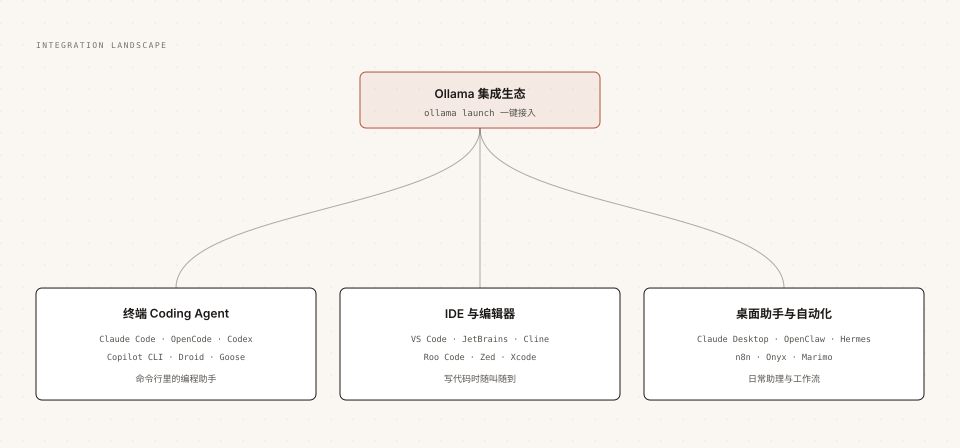

Ollama ツールとエディター統合
Ollama 公式は統合カタログ全体を管理しています。ターミナルプログラミングAgent、主要IDE、デスクトップアシスタント、自動化プラットフォームはすべてローカルモデルを直接利用できます。
この章では、ollama launchワンクリック接続、または環境変数の手動設定で、ローカルモデルを日常のツールチェーンに組み込みます。

統合エコシステム全体像
公式統合は使用シナリオに応じて3つのカテゴリに分類され、コード作成から日常アシスタントまでのすべての入り口をカバーします。

すべての統合は本質的に同じ経路を使用します：ツールのモデルリクエストを localhost:11434 に、または OpenAI、Anthropic 互換インターフェースに向けます。
ollama launch：ワンクリック接続
launch は統合の統一エントリポイントで、対話式に「ツール選択、モデル選択、設定記述、起動」の4ステップを実行します。
例
ollama launch
# 指定した統合を起動し、モデルを指定
ollama launch claude --model qwen3.5
# 設定のみ生成し、起動しない
ollama launch droid --config
スクリプトやCIなどの非対話シナリオでは --yes ですべてのセレクターをスキップし、モデルは --model で指定する必要があります：
例
# "--" 以降の引数はそのまま Claude Code 本体に渡される
ollama launch claude --model qwen3.5 --yes -- -p "このリポジトリは何をするものですか？"
ターミナル Coding Agent
ターミナル内のプログラミングAgentは現在最も活発な統合カテゴリであり、Ollama は各社の互換プロトコルを介して接続します。
| ツール | 説明 |
|---|---|
| Claude Code | Anthropic のプログラミングAgent。Anthropic 互換インターフェースを経由して接続し、ツール呼び出し、サブタスク、Web検索をサポート |
| OpenCode | オープンソースのプログラミングAgent。コードの編集、実行、イテレーションを行う |
| Codex | OpenAI のプログラミングアシスタント。CLI とデスクトップ形態を含む |
| Copilot CLI | GitHub のコマンドラインプログラミングアシスタント |
| Droid | Factory が提供する AI プログラミングAgent |
| Goose | オープンソースの自動化Agent。MCP 拡張をサポート |
| DeepSeek Harness | DeepSeek がオープンソース化した Agent フレームワーク。サブタスクとWeb検索を備える |
| Cline CLI | Cline のコマンドライン形態 |
Claude Code 接続の詳細
最も代表的な Claude Code を例にとると、ワンクリック方式は上記の launch コマンドです。手動設定は2つの環境変数だけが必要です：
例
export ANTHROPIC_AUTH_TOKEN=ollama
export ANTHROPIC_API_KEY=""
export ANTHROPIC_BASE_URL=http://localhost:11434
# 任意のローカルモデルで起動する
claude --model qwen3.5
接続後、Claude Code の対話、ファイル編集、コマンド実行、ビジュアル入力、Web検索はすべてローカルまたはクラウドの Ollama モデルを使用できます。
プログラミングAgentを実行する際のハードルはコンテキストウィンドウです。ツールの返却やコードファイルは簡単に1万トークンを超えます。公式はコンテキストを64K以上に設定することを推奨しており、この記事の最後の節で設定方法を紹介します。
IDE とエディター
VS Code 公式拡張機能
Ollama は VS Code に公式拡張機能を提供し、ローカルモデルを VS Code Chat に接続します。
3つのステップで接続完了：
最初に、拡張機能マーケットで Ollama 拡張機能をインストールします。デフォルトで localhost:11434 上のサービスを検出します。
次に、Chat パネルを開き、入力ボックス下のモデルセレクターで Ollama セクションを見つけて、モデルを選択します。
3番目に、そのまま対話で質問すると、ローカルモデルがコーディングの質疑応答に参加できます。
例
ollama pull qwen3.5
# クラウドモデルはログインが必要、ローカルモデルはアカウント不要
ollama signin
モデルがセレクターに表示されない場合は、順番に確認します：Ollama が実行中かどうか、ollama list でモデルが見えるかどうか、コマンドパレットの Ollama: Refresh Models を実行し、Ollama: Diagnose Models で診断出力を確認します。
その他のエディター
| ツール | 形態 | 説明 |
|---|---|---|
| JetBrains | プラグイン | IntelliJ 系 IDE 内で Ollama モデルを使用 |
| Cline / Roo Code | VS Code プラグイン | Agent型コーディングプラグイン。カスタムモデルエンドポイントをサポート |
| Zed | 組み込み設定 | 高性能エディター。カスタムモデルプロバイダーをネイティブにサポート |
| Xcode | 組み込み設定 | Apple プラットフォーム開発ツールにローカルモデルを接続 |
デスクトップアシスタントと自動化
ローカルモデルはコードを書くだけでなく、日常のアシスタントや自動化エンジンとしても機能します。
| ツール | 位置づけ |
|---|---|
| Claude Desktop | Anthropic デスクトップアシスタント。ローカルとクラウドの Ollama モデルに接続可能 |
| OpenClaw | メッセージソフトに接続する個人アシスタント。日常のタスクを処理 |
| Hermes / Hermes Desktop | オープンソースAgent。自己改善スキルと記憶能力を備える |
| n8n | ビジュアルワークフロープラットフォーム。Ollama を自動化フローに組み込む |
| Onyx | 企業向けナレッジベースQ&Aプラットフォーム（RAGシナリオ） |
| Marimo | リアクティブPython Notebook。セル内でモデルを呼び出し可能 |
Agent シナリオのコンテキストチューニング
統合ツールが動かない、的外れな答えが返る場合、ほぼ確実にコンテキストウィンドウが小さすぎます。
ツールが返すWebページの内容、コードファイル全体の内容、複数ターンのAgent履歴はすべてコンテキストウィンドウに入ります。デフォルトの4Kでは全く不十分で、公式がWeb検索、Agent、コーディングツールに推奨する値は少なくとも64000トークンです。
3つの設定方法から1つ選択：
例
# 方法2：サービス起動時にグローバル設定
OLLAMA_CONTEXT_LENGTH=64000 ollama serve
# 方法3：Modelfile で専用モデルに固定
PARAMETER num_ctx 65536
設定後、ollama ps の CONTEXT 列で反映を確認し、PROCESSOR 列でVRAMに収まるかどうかを確認します。
定番オープンソースエコシステムの現状
公式統合カタログ以外にも、コミュニティエコシステムには Ollama と広く連携するオープンソースプロジェクトが多数あります。
| プロジェクト | 位置づけ | 現状 |
|---|---|---|
| LangChain / LlamaIndex | LLM アプリケーション開発フレームワーク。Ollama 統合クラスを内蔵 | コミュニティ保守。RAG 開発でよく使用 |
| Open WebUI | 自作型 ChatGPT 風Webインターフェース。ワンクリックでローカル Ollama に接続 | コミュニティ保守。チーム内共有でよく使用 |
| Continue | オープンソース AI コードアシスタントプラグイン | コミュニティ保守。カスタムモデルエンドポイントをサポート |
クリックしてノートを共有
ノートはこの記事の内容の拡張である必要があります！
記事投稿は、ここをクリックしてください
登録招待コードの取得方法
ノートを共有する前にログインが必要です！
登録招待コードの取得方法